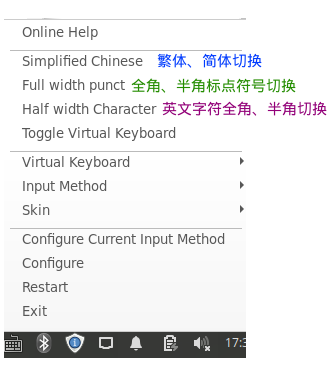

Linux mint 19.1 Tessa 使用，关联 update-alternatives, apt, fcitx, xfce4, lm-sensors, bluetooth, glxinfo, GPU Driver, lspci, lshw, hibernate, virtualbox, exfat
基于的Ubuntu版本
- Linux Mint 19.3 Tricia: is based on Ubuntu 18.04.3 LTS and Linux Kernel 5.0.
- Linux mint 19.1 Tessa :
timeshift 系统备份
注意！！如果挂载了其他硬盘的分区（特别是大体积的数据分区），备份前，要在设置中排除掉。
timeshift ->
安装系统
apt
改为国内源
System Menu -> Software Source
中文环境
安装中文语言支持
- 开始菜单 > Preferences > Language > Install \/ Remove Language…
- 选择 Chinese, China UTF-8 ，点击 Install language packs
安装 fcitx 输入法
- 开始菜单 > Preferences > Input Methods 选择 Simplified Chinese ，按其中提示安装就好了
- 注意：如果装好后，在状态栏看不到 键盘小图标，直接去 开始菜单 > Preferences > Fcitx Configuration
fcitx 特殊字符输入
- ref
- Unicode 码表： https://unicode-table.com/cn/search
- fcitx - Unicode : https://fcitx-im.org/wiki/Unicode
- fcitx - Punctuation : https://fcitx-im.org/wiki/Punctuation
- 如何输入Unicode字符
- Ctrl+Alt+Shift+U
- 输入unicode值
- To search hex, type U+ or 0x as prefix.
- To search decimal value, type number directly.
| 0x3010 | 【 | 左实心凹形括号 |
| 0x3011 | 】 | 右实心凹形括号 |
fcitx使用
全角、半角切换

硬件配置
CPU 温度监控
1 2 3 4 | sudo apt install lm-sensors sudo apt install xfce4-sensors-plugin sudo -i chmod u+s /usr/sbin/hddtemp |
系统状态栏右键菜单 -> Panel -> Add New Items… -> 搜索sensor -> 选中 sensor plugin -> 点击 Add
右击系统状态栏上“Sensors”字样 -> 右键菜单选择属性设置，勾选需要显示在状态栏的属性的“Show”
bluetooth 设置
开启关闭bluetooth
- 参考：
默认系统安装好，蓝牙是打开的。
启动时，就关闭蓝牙，不知道会不会提升点性能。
- System Menu -> Session and Startup -> Application Autostart -> Add
- 添加一个启动命令
- Name: bt-close
- Command:
rfkill block bluetooth
显卡驱动
- ref
1 2 3 4 5 6 7 8 9 10 11 12 13 14 15 16 17 | # check your VGA graphic card model and driver in use $ sudo lshw -c video # check which AMD related modules are already loaded $ lsmod | grep amd # check boot messages for more information about the graphics card driver in use $ dmesg | grep -i amdgpu # Graphic Info $ inxi -G # 脱敏的所有系统设置信息 $ inxi -Fxz # 简要信息 $ inxi -a $ glxinfo |
AMD 驱动
从ppa安装AMD GPU Driver
1 2 | sudo add-apt-repository ppa:oibaf/graphics-drivers sudo apt update && sudo apt -y upgrade |
恢复默认AMD driver
1 2 | $ sudo apt install ppa-purge $ sudo ppa-purge ppa:oibaf/graphics-drivers |
AMDGPU 说明
- ref
- 2种Stack
- All-Open Stack
- Base kernel drivers
- Base accelerated graphics drivers
- Mesa OpenGL
- Mesa multimedia
- Pro Stack
- Base kernel drivers
- Base accelerated graphics drivers
- Mesa multimedia
- Pro OpenGL
- Pro OpenCL
- PAL OpenCL stack (supports Vega 10 and later products)
- Legacy OpenCL stack (supports legacy products older than Vega 10)
- Pro Vulkan
- All-Open Stack
- amdgpu-install
--opencl可以制定OpenCL实现，也可不指定，全部安装
--opencl=palPAL: Provides support for Vega 10 and newer hardware.
--opencl=legacyLegacy: Provides support for hardware older than Vega 10.
--opencl=pal,legacy2种实现都安装
-
安装 All-Open Stack
1
./amdgpu-install -y
卸载：
amdgpu-uninstall - 安装 Pro Stack
./amdgpu-pro-install -y
Base kernel
Accelerated graphics
Mesa multimedia
Pro OpenGL
Pro Vulkan./amdgpu-pro-install -y --opencl=pal,legacy
Base kernel
Accelerated graphics
Mesa multimedia
Pro OpenGL
Pro Vulkan
Pro OpenCL./amdgpu-pro-install -y --opencl=pal,legacy --headless
Only base kernel
Pro OpenCL (headless mode)- 卸载：
amdgpu-pro-uninstall
安装 AMDGPU PRO
- refer to
- How do I install AMDGPU-Pro on Mint 19?
- Radeon Software for Linux Installation - amd.com
- Radeon™ Software for Linux® Installation - amd.com
- Radeon™ Software for Linux® 18.40
- Radeon™ Software for Linux® 19.10
- Radeon™ Software for Linux® 19.20
- Radeon™ Software for Linux® 19.30
- Radeon™ Software for Linux® 19.50
- Radeon™ Software for Linux® 20.10
- Linux Mint 19.3 , amdgpu-pro-install 安装情况：
- Radeon™ Software for Linux® 18.40
安装时提示：WARNING: amdgpu dkms failed for running kernel
可以正常启动，运行VirtualBox报错： amdgpu_device_initialize: amdgpu_get_auth (1) failed (-1) - Radeon™ Software for Linux® 19.20
可以正常启动，运行VirtualBox报错： amdgpu_device_initialize: amdgpu_get_auth (1) failed (-1) - Radeon™ Software for Linux® 19.30 不显示xfce session，整个黑屏
- Radeon™ Software for Linux® 19.50 安装时候在“Building initial module for 5.0.0-32-generic”要很久，登陆进xfce session，整个白屏。
- Radeon™ Software for Linux® 18.40
- Linux Mint 19.3 , amdgpu-install 安装情况：
- Radeon™ Software for Linux® 18.40
安装时提示：WARNING: amdgpu dkms failed for running kernel
可以正常启动，也能正常运行VirtualBox
- Radeon™ Software for Linux® 18.40
- 从 AMD 官网 Radeon™ Software for Linux® 18.40 Highlights 下载 deb 安装包
- 下载好
amdgpu-pro-18.40-697810-ubuntu-18.04.tar.xz - 将 mint 19 伪装成 ubuntu 18.04
amdgpu的ubuntu 18.04的deb包，安装前，严格检查/etc/os-release，不是 ubuntu 18.04 就不能安装
会报错：”ERROR: This package can only be installed on Ubuntu 18.04.”- 解决办法：修改 os-release
ID=linuxmint改为ID=ubuntuVERSION_ID="19.3"改为VERSION_ID="18.04"
- 解决办法：修改 os-release
- 解压并安装
1 2
tar Jxvf amdgpu-pro-18.40-697810-ubuntu-18.04.tar.xz ./amdgpu-pro-install --opencl=pal,legacy
- 将当前用户加入video组
sudo usermod -a -G video $LOGNAME -
重启系统
- After rebooting, if you unable to get to the desktop.
Ctrl + Alt + F1进入命令行- re-install those packages, right after Radeon Software for Linux 19.10 is uninstalled,
- before rebooting. It can also be used in tty1:
apt install xserver-xorg xserver-xorg-video-all
- 检查是否安装成功
1 2 3 4 5 6 7 8 9 10 11
$ grep hybrid /var/log/Xorg.0.log AMDGPU(0): AMDGPU DDX hybrid version: xx.xx.x.xx AMDGPU(0): AMDGPU kernel module hybrid version: xx.xx.x.xx # The module libglx.so should be loading from here # /opt/amdgpu-pro/lib/xorg/modules/extensions $ grep libglx /var/log/Xorg.0.log Loading /opt/amdgpu-pro/lib/xorg/modules/extensions/libglx.so # find out if you have AMDGPU-Pro already installed dpkg -l amdgpu-pro
卸载： amdgpu-pro-uninstall
显示相关配置
显示器配置工具有： xfce4-display-settings 、 lxrandr
1 2 3 4 5 | # 显卡信息 lspci | grep VGA # 或 lshw -C display |
多个显示器设置
xrandr 命令查看显示器情况，一般 LVDS1 是laptop的显示器，VGA1或HDMI1 是外接显示器。
1 2 3 4 5 6 7 | # 显示器信息 xrandr -q # 设置主显示器，replace <name> with the monitor that you want to make primary xrandr --output <name> --primary # put the command in your .xinitrc file, or set the primary monitor in ~/.config/monitors.xml # change no to yes between <primary> and </primary> and change yes to no for the monitor that should not be primary |
1 2 | # 以LVDS1为主输出, 在LVDS1的右边以VGA1显示器为第二输出. xrandr --output VGA1 --right-of LVDS1 |
其他位置关系参数还有：
1 2 3 4 | --right-of --left-of --above --below |
xfce4-display-settings 显示器模式的GUI设置工具
xfce4-display-settings -m 或者 电脑的投影切换功能键，都可以将显示器模式选择窗口调出来。
xfce4-display-settings 会调出窗口，显示当前所有显示器情况。
hibernate 休眠功能
- refer
- forums.linuxmint.com - Why hibernate doesn’t work?
提到升级内核问题。 - Enable hibernation in Xubuntu 16.04
提到如何在界面上显示“休眠”按钮 - mxlinux.org - Hibernate
- forums.linuxmint.com - Why hibernate doesn’t work?
- 升级内核
mint-19.1-tessa 安装的内核版本是4.15.0-20-generic，不支持休眠。
需要升级内核：- 开始菜单打开
Update Manager，菜单 view -> Linux kernels - 选择安装
4.18.0-17 - 关机，再启动
- 开始菜单打开
- 查看swap分区的UUID：
lsblk -f - 添加 grub 的启动参数
- 修改
/etc/default/grub，添加resume = /dev/disk/by-uuid/the-swap-partition-uuid1
GRUB_CMDLINE_LINUX_DEFAULT="quiet splash resume=/dev/disk/by-uuid/bdc2c09a-15ae-4c09-9c3c-564f94b41c20"
- 修改
- 重新安装
pm-utils和swsusp1 2 3 4 5
dpkg -l pm-utils uswsusp sudo apt remove pm-utils sudo apt update sudo apt install pm-utils uswsusp dpkg -l pm-utils uswsusp
- 在界面上显示“休眠”按钮
1 2
sudo -i vim /var/lib/polkit-1/localauthority/10-vendor.d/com.ubuntu.desktop.pkla
搜索
[Disable hibernate by default in upower]和[Disable hibernate by default in logind]，
将其中ResultActive的值从no改为yes1 2 3 4 5 6 7 8 9
[Disable hibernate by default in upower] Identity=unix-user:* Action=org.freedesktop.upower.hibernate ResultActive=yes [Disable hibernate by default in logind] Identity=unix-user:* Action=org.freedesktop.login1.hibernate;org.freedesktop.login1.handle-hibernate-key; ResultActive=yes
保存文件，就能在“关机对话框”和“登录界面右上角”看到hibernate了。
休眠命令
- sysvinit :
sudo pm-hibernate - systemd :
systemctl hibernate
设置定时休眠（到点直接休眠）
- ref
- 进入root的crontab
1 2
sudo -i crontab -e
- 调出vi，添加一行规则，
1
13 11 * * * sudo pm-hibernate
上面例子， 11点13分休眠，
注意！！ 即使是root 的crontab，还是要求写sudo，
可能是因为权限问题，设置可能在如下两个目录的设置文件中：/etc/polkit-1//var/lib/polkit-1
- 保存后退出vi，系统过段时间reload root 的 crontab
设置定时休眠（检查锁屏状态，才休眠）
- ref
- sudoers
- DBus
- 工具：dbus-send, qdbus, d-feet(GUI)
- Use D-Bus to get lockscreen’s actived/deactived signals.
- https://unix.stackexchange.com/questions/197032/detect-if-screensaver-is-active
- get the DBUS ADDRESS from the environment
- Control Your Linux Desktop with D-Bus
- Is there a programmable way to tell if the screen is locked?
- xfce4
- mint19.1 tessa 用的锁屏工具是轻量级的light-locker，而不是 xscreensaver
- light-locker-command 可以锁屏、检查锁屏状态、idle时间等，但是只能在session中的shell使用，不能在cron的命令中使用。
- github - light-locker
-
赋予当前用户（例如，john）休眠命令权限
1
sudo visudo -f /etc/sudoers.d/su4john
添加一行
1
wi ALL=(ALL) NOPASSWD: /usr/sbin/pm-hibernate
-
创建脚本 lock-to-hibernate ，用来判断是否锁屏之后才休眠
1
sudo notepadqq --allow-root --new-window /usr/local/bin/lock-to-hibernate
1 2 3 4 5 6 7 8 9 10 11 12 13 14 15 16 17 18 19
#!/bin/bash # this script will be used in cron. # when cron triggers this script, it turn computer to hibernate if screen is locked. DBUS_ADDRESS=$(grep -z DBUS_SESSION_BUS_ADDRESS /proc/$(pidof -s xfce4-session)/environ | awk -F= '{print $2"="$3}') idle=$(dbus-send --bus="$DBUS_ADDRESS" --dest=org.freedesktop.ScreenSaver --type=method_call --print-reply --reply-timeout=20000 /org/freedesktop/ScreenSaver org.freedesktop.ScreenSaver.GetActive &2>&1) #echo "pidof -s xfce4-session = " $(pidof -s xfce4-session) >> /home/wi/lock-to-hibernate.log #echo "DBUS_ADDRESS = " $DBUS_ADDRESS >> /home/wi/lock-to-hibernate.log #echo "x-x-idle = " $idle >> /home/wi/lock-to-hibernate.log if ( echo $idle | grep "boolean true" ); then echo "try to hibernate" >> /home/wi/lock-to-hibernate.log sudo pm-hibernate else echo "failed to hibernate" >> /home/wi/lock-to-hibernate.log fi
-
设置cron定时执行脚本 lock-to-hibernate
执行
crontab -e后添加如下定时规则（18:30休眠，等明天再开工，加班就22:30再休眠）：1
30 18,22 * * * /usr/local/bin/lock-to-hibernate
定时锁屏的脚本
1 2 3 4 5 6 7 | #!/bin/bash # this script will be used in cron. # when cron triggers this script, it turn computer to locked. DBUS_ADDRESS=$(grep -z DBUS_SESSION_BUS_ADDRESS /proc/$(pidof -s xfce4-session)/environ | awk -F= '{print $2"="$3}') idle=$(dbus-send --bus="$DBUS_ADDRESS" --dest=org.freedesktop.ScreenSaver --type=method_call --print-reply --reply-timeout=20000 /org/freedesktop/ScreenSaver org.freedesktop.ScreenSaver.Lock &2>&1) |
VirtualBox
安装 5.2.26
- 从官网 下载 VirtualBox 5.2.26
- virtualbox-5.2_5.2.26-128414~Ubuntu~bionic_amd64.deb Linux Hosts: Ubuntu 18.04 / 18.10 / Debian 10
- Oracle_VM_VirtualBox_Extension_Pack-5.2.26.vbox-extpack
- 安装 Virtualbox ： 双击 Deb 安装包
- 安装 extension package ：执行
VBoxManage extpack install Oracle_VM_VirtualBox_Extension_Pack-5.2.26.vbox-extpack- 安装完成，可执行命令来查看结果：
VBoxManage list extpacks
- 安装完成，可执行命令来查看结果：
共享文件夹设置
兼容mac的挂载路径
共享文件在移动硬盘上，会导致不同系统挂载路径不同。使用软链接文件，可以解决这个问题。
例如，在Mac上共享目录地址是： /Volumes/your-ssd-label/share-data ，
在 Ubuntu上由于udisks2，移动usb block设备，都被挂载到 /media/your-login-name/your-ssd-label，
所以，创建一个软链接可以解决这个问题，ln -s /media/your-login-name/your-ssd-label/share-data /Volumes/your-ssd-label/share-data
这里多说两句，据说udisks2没有提供设置来修改挂载路径，只能放到 /media 下，
想通过在 udev 的 /etc/udev/rules.d/ 添加add和remove规则，来自动挂载到 /Volumes 也是徒劳，
规则里面的shell脚本，没有root权限啊，不能执行mount命令哈。
文件系统
支持 exfat
1 2 3 | sudo add-apt-repository universe sudo apt-get update sudo apt-get install -y exfat-fuse exfat-utils |
使用更快的exfat
1 2 3 4 5 | sudo add-apt-repository ppa:arter97/exfat-linux sudo apt update sudo apt-get remove exfat-fuse exfat-utils sudo apt install exfat-dkms |
cdrom 上文件无法执行脚本
cdrom 上文件无法执行脚本，检查是否mount时，设置了 “noexec” 选项。
1 | mount -v | grep cdrom |
重新挂载一下就好：
1 | mount -o remount,ro,exec /media/cdrom |
Xfce GUI
添加 Desktop App入口
- 参考
- apps should look in $HOME/.icons (for backwards compatibility), in $XDG_DATA_DIRS/icons and in /usr/share/pixmaps (in that order).
- hicolor theme
- In order to have a place for third party applications to install their icons there should always exist a theme called “hicolor”
- Implementations are required to look in the “hicolor” theme if an icon was not found in the current theme.
例子：
- 拷贝chrome 的 desktop entry
1 2
cd /usr/share/applications sudo cp google-chrome.desktop google-chrome-custom.desktop
- 修改新的 desktop entry
sudo vim google-chrome-custom.desktop
修改 所有Exec参数值出现的地方，添加一些chrome的自定义参数
icon使用自定义Icon=google-chrome-custom，把/usr/share/icons/hicolor/256x256/apps/google-chrome.png修改下，放到~/.icons/google-chrome-custom.png下面。
Cinnamon GUI
Font 设置
开始菜单 -> Font Selection -> 设置字体
有 San 字样的是宋体， Noto 是Google的开源字体集，例如： “Noto San Moto Regular” Noto等宽宋体
文件编辑
xed
xed是系统自带的编辑器，默认安装。
从命令行启动xed编辑sudo权限的文件： xed admin:///where-your-file
图形界面 Xfce
快捷键
设置和查看到位置： Windows Manager -> keyborad
- Ctrl + Alt + D
- 显示桌面
- Windows key
- Brings up the Whisker menu
- Ctrl-Alt-Del
- Locks the desktop by calling xflock4
- Alt-F2
- Brings up a dialog box to run an application
- Alt-F3
- Opens the Application Finder which also allows editing menu entries
- Alt-F4
- 关闭当前窗口
- PrtScr
- Opens the Screenshooter for screen captures
: —
- Ctrl-Alt-L
- 锁屏幕
- Ctrl-Alt-Bksp
- Closes the session (without saving!) and returns you to the login screen
- Ctrl-Alt-F1
- Drops you out of your X session to a command line; use Ctrl-Alt-F7 to return.
- Alt-F1
- Opens this MX Linux Users Manual
常用软件
默认图形浏览器 xviewer
在命令行中直接调用： xviewer your-image.png
切换默认编辑器
mint19.1 默认是nano编辑器，想切换到vim用如下命令：
1 | sudo update-alternatives --config editor |
notepadqq
类似 notepad++ 的编辑器。
1 2 3 | sudo add-apt-repository ppa:notepadqq-team/notepadqq sudo apt-get update sudo apt-get install notepadqq |
ps: 不要使用snap安装，按照的版本很怪，打开文件时候一个文件都读取不到。
或者，编译安装：
1 2 3 4 5 6 7 8 | sudo apt-get update sudo apt-get install -y qt5-default qttools5-dev-tools qtwebengine5-dev libqt5websockets5-dev libqt5svg5 libqt5svg5-dev libuchardet-dev git clone https://github.com/notepadqq/notepadqq.git cd notepadqq/ ./configure --prefix /usr make sudo make install |
root权限运行 notepadqq
1 | sudo notepadqq --allow-root --new-window file-owned-by-root |
Brave 浏览器
1 2 3 4 5 6 7 8 9 | curl -s https://brave-browser-apt-release.s3.brave.com/brave-core.asc | sudo apt-key --keyring /etc/apt/trusted.gpg.d/brave-browser-release.gpg add -
source /etc/os-release
echo "deb [arch=amd64] https://brave-browser-apt-release.s3.brave.com/ $UBUNTU_CODENAME main" | sudo tee /etc/apt/sources.list.d/brave-browser-release-${UBUNTU_CODENAME}.list
sudo apt update
sudo apt install brave-keyring brave-browser
|
xmind8
- 到官网下载 https://www.xmind.net/download/xmind8
- 解压 xmind-8-update8-linux.zip
- 运行解压后目录中 setup.sh ：
sudo ./setup.sh - 进入
XMind_amd64/ - 编辑
XMind.ini，最后一行添加参数--add-modules=java.se.ee
不修改 ini 文件，直接运行./XMind_amd64/Xmind会报错org.eclipse.e4.core.di.InjectionException: java.lang.NoClassDefFoundError: javax/annotation/PostConstruct。
参考： Xmind Support Center - XMind starts but then is aborted just before starting to run - 运行
./XMind_amd64/Xmind
启动 xmind8 报错：“java.lang.IllegalStateException: Unable to acquire application service”
报错：“java.lang.IllegalStateException: Unable to acquire application service. Ensure that the org.eclipse.core.runtime bundle is resolved and started (see config.ini).”
- 解决方法：在
Xmind.ini中添加：1 2 3 4 5 6 7 8 9 10 11 12
-configuration /opt/xmind/XMind_amd64/./configuration -data /opt/xmind/XMind_amd64/../workspace -startup /opt/xmind/XMind_amd64/../plugins/org.eclipse.equinox.launcher_1.3.100.v20150511-1540.jar --launcher.library /opt/xmind/XMind_amd64/../plugins/org.eclipse.equinox.launcher.gtk.linux.x86_64_1.1.300.v20150602-1417 --launcher.defaultAction openFile -vmargs -Dfile.encoding=UTF-8
xmind desktop configure
- ref
- https://github.com/pld-linux/xmind/blob/master/xmind.desktop
- https://www.xmind.net/m/PuDC/
- https://blog.scottlowe.org/2018/09/01/better-xmind-gnome-integration/
- freedesktop - Tutorial: adding MIME information to the database
- Add a custom MIME type for all users
- Adding MIME types
- Custom Mime File Type Icon in XFCE Thunar
- How to change a file type icon in XFCE (Thunar)?
1 2 3 4 5 6 7 8 9 10 11 12 | $ cat /usr/share/applications/xmind.desktop [Desktop Entry] Encoding=UTF-8 Type=Application Name=xmind8 Comment=mindmap tool Icon=/opt/xmind/xmind.256.png Exec=/opt/xmind/xmind-8-update8-linux/XMind_amd64/XMind %F Path=/opt/xmind/xmind-8-update8-linux/XMind_amd64 Terminal=false Categories=Office;Productivity;Development;X-XFCE;X-Xfce-Toplevel; MimeType=application/vnd.xmind.workbook; |
图标是从 xmind-8-update8-linux/XMind_amd64/configuration/org.eclipse.osgi/983/0/.cp/icons/ 拷贝出来的。
文件浏览器thunar 中xmind文件图标设置。
- 创建文件
/usr/share/mime/packages/xmind.xml1 2 3 4 5 6 7 8 9 10
<?xml version="1.0" encoding="utf-8"?> <mime-info xmlns="http://www.freedesktop.org/standards/shared-mime-info"> <mime-type type="application/vnd.xmind.workbook"> <comment>XMind Workbook</comment> <glob pattern="*.xmind"/> <glob pattern="*.XMIND"/> <glob pattern="*.XMind"/> <generic-icon name="xmind"/> </mime-type> </mime-info> - 运行如下命令，刷新mime type database
1
sudo update-mime-database -V /usr/share/mime
Development
git
1 2 3 4 5 6 7 8 9 10 11 12 13 14 15 16 17 18 19 20 21 | git config --global user.name your-name git config --global user.email your-email@some-site.com git config --global alias.l "log --decorate --oneline --graph" git config --global alias.ll "log --oneline --decorate --graph -10" git config --global alias.st status git config --global alias.d diff git config --global alias.co checkout git config --global alias.pushall '!git remote | xargs -L1 -I R git push R ' git config --global alias.rv "remote -v" git config --global core.autocrlf input git config --global color.ui true git config --global core.filemode false git config --global http.sslverify false git config --global http.postbuffer 524288000 git config --global core.editor "vim" git config --global core.checkStat minimal git config --global core.quotepath false |
默认颜色方案在 黑色半透明 背景的terminal下看着费劲，要改下color scheme：
1 2 3 4 5 6 7 8 | git config --global color.status.changed "cyan normal bold" git config --global color.status.untracked "red normal bold" git config --global color.status.added "green normal bold" git config --global color.diff.new "green normal bold" git config --global color.diff.old "red normal bold" git config --global color.diff.frag "magenta normal bold" git config --global color.diff.meta "yellow normal bold" |
Java / JDK
多个JDK安装和管理
1 2 3 4 5 6 7 8 9 10 11 12 13 14 | sudo apt-get install openjdk-11-jdk sudo apt-get install openjdk-8-jdk # 两个JDK都安装在 /usr/lib/jvm 下面 # /usr/lib/jvm/java-11-openjdk-amd64/bin/java # /usr/lib/jvm/java-8-openjdk-amd64/jre/bin/java java -version sudo update-alternatives --list java sudo update-alternatives --query java # java 和 javac 记得都一起改 sudo update-alternatives --config java sudo update-alternatives --config javac |
jmeter
设置GUI启动
1 | vi /usr/share/applications/apache-jmeter.desktop |
1 2 3 4 5 6 7 8 9 10 | [Desktop Entry] Encoding=UTF-8 Type=Application Name=apache-jmeter Comment=testing tool Icon=/opt/jmeter/apache-jmeter-5.1.1/icon-apache.png Exec=/opt/jmeter/apache-jmeter-5.1.1/bin/jmeter.sh Path=/opt/jmeter/apache-jmeter-5.1.1/bin/ Terminal=false Categories=Productivity;Development; |
图标 icon-apache.png 是从 /opt/jmeter/apache-jmeter-5.1.1/lib/ext/ApacheJMeter_core.jar 里面找的apache羽毛图标。
ruby
use rvm install ruby
-
从 ppa 安装 rvm
~~~
sudo apt-get install software-properties-common
sudo apt-add-repository -y ppa:rael-gc/rvm
sudo apt-get update
sudo apt-get install rvm -
将用户加入rvm组
1 2 3 4
usermod -a -G rvm root redmine # 检查用户所在的组 groups root
-
改成国内源
1 2
cp /usr/share/rvm/src/rvm/config/db /usr/share/rvm/src/rvm/config/db.bk.2019-04-12.origin vim /usr/share/rvm/src/rvm/config/db
1 2 3 4 5 6 7 8
# ruby-china.org 域名改成 ruby-china.com，2019年org域名没申请下来 ruby_url=https://cache.ruby-china.com/pub/ruby ruby_url_fallback_1=https://ftp.ruby-china.com/pub/ruby #ruby_url=https://cache.ruby-china.org/pub/ruby #ruby_url_fallback_1=https://ftp.ruby-china.org/pub/ruby #ruby_url=https://cache.ruby-lang.org/pub/ruby #ruby_url_fallback_1=https://ftp.ruby-lang.org/pub/ruby -
注销再登录后使用
rvm。 -
rvm只能使用在 login shell2种方法切换到login shell。
- 临时： 执行
bash --login - gnome-terminal 设置： Edit 菜单 -> Preferences -> your profile -> Command 选项页
勾选 “Run command as a login shell”
或者，修改
.bashrc以便在普通交互 gnome-terminal 中使用：1 2 3
if [[ -s "/etc/profile.d/rvm.sh" ]]; then . "/etc/profile.d/rvm.sh" fi - 临时： 执行
-
安装ruby
1 2
rvm list known rvm install 2.5
-
配置gem的国内源
1
gem sources --add http://gems.ruby-china.com/ --remove https://rubygems.org/
Android
Android Studio
安装
- 下载tar.gz ： https://developer.android.com/studio
例如： android-studio-ide-183.5522156-linux.tar.gz - 解压到目标文件夹
例如：/opt/android/android-studio - 创建sdk目录，注意，不要是android-studio 的子目录
例如：/opt/android/android-sdk - 命令行启动：
{installation home}/bin/studio.sh
配置成 desktop application
1 2 3 4 5 6 7 8 9 10 11 | $ cat /usr/share/applications/android-studio.desktop [Desktop Entry] Encoding=UTF-8 Type=Application Name=android-studio Comment=android IDE Icon=/opt/android/android-studio/bin/studio.png Exec=/opt/android/android-studio/bin/studio.sh Path=/opt/android/android-studio/bin Terminal=false Categories=Productivity;Development; |
adb 等platform tools
1 | sudo apt install android-sdk-platform-tools |
Package: android-sdk-platform-tools
Version: 27.0.0+10~18.04.2
不过这工具有点老，更不上android sdk 更新。
adb devices 报错：no permissions (user in plugdev group; are your udev rules wrong?);
解决方法：
1 2 3 | sudo adb kill-server sudo adb start-server adb devices |
在virtualbox上安装
启动花屏问题
iso在virtualbox启动后会花屏，使用 ctrl + alt + F1 切换的命令行， ctrl + alt + F7 再切回图形界面就好啦。
启动盘制作工具
Windows 启动盘制作工具 WoeUSB
1 2 | sudo add-apt-repository ppa:nilarimogard/webupd8 sudo apt-get update |